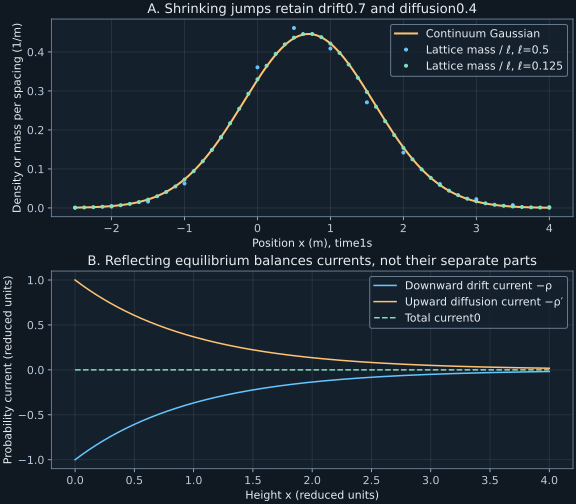

Chapter9 · Lecture11
From master equations to Fokker–Planck and Smoluchowski dynamics
A microscopic transport model jumps between lattice sites. A macroscopic calculation evolves a smooth probability density. Shrinking the jumps while increasing their rate can connect these descriptions, but a Taylor expansion alone does not ensure a valid probability equation. Keeping a fourth derivative can even make the proposed characteristic function exceed one. The task is to derive the diffusion approximation while preserving normalization, nonnegativity, and the reflecting boundary that creates sedimentation equilibrium.
Lecture11 supplies the continuous master equation, Kramers–Moyal expansion, diffusion scaling, boundary currents, Smoluchowski dynamics, and a stochastic differential equation interpretation. Its full caption text was read. The truncation condition is checked against Pawula's original paper, printed page187, and stated with its even-order hypothesis. The Itô convention, noise normalization, and distinction between homogeneous evolution and stationary initialization are explicit below.
9.1 Continuous state space does not eliminate jumps L11 1:39
Let $X(t)$ be a real-valued Markov jump process, and write $w(y\mid x)dy$ for the rate of jumping from $x$ to a neighborhood of $y$. It has units inverse time per unit output coordinate. For a finite-rate jump model the total exit rate is $q(x)=\int w(y\mid x)dy\lt\infty$. Assume the process is nonexplosive and the required probability integrals exist. Its density obeys
$$\partial_t\rho(x,t)=\int [w(x\mid y)\rho(y,t)-w(y\mid x)\rho(x,t)]dy.\tag{9.1}$$The first term adds arrivals from every source; the second removes departures to every destination. A conditional initial value $x_0$ means initial law $\delta(x-x_0)$. There can remain an atom representing no jump, so (9.1) may need interpretation for measures rather than ordinary smooth densities. Assuming continuous values is not the same as assuming continuous paths.
Multiply (9.1) by a smooth compactly supported test function $f(x)$ and integrate over $x$. Assume differentiation under that integral is justified and the gain and loss integrals are absolutely integrable; a sufficient condition for these bounded test functions is $\int q(x)\rho(x,t)dx\lt\infty$. Fubini's theorem then permits exchanging the integrations. Interchanging the dummy variables $x,y$ in the gain term writes it as $\int\rho(x,t)\int f(y)w(y\mid x)dy\,dx$. Subtracting the loss term $\int\rho(x,t)f(x)q(x)dx$ gives the weak evolution identity and its jump generator:
$$\frac{d}{dt}\mathbb E[f(X(t))]=\mathbb E[(Lf)(X(t))],\qquad(Lf)(x)=\int[f(y)-f(x)]w(y\mid x)dy.\tag{9.2}$$The difference vanishes for constant $f$, expressing probability conservation. This weak form is also the cleanest route to the local approximation because derivatives first act on the known test function, not on an unknown density.
9.2 The moment expansion is formal until its remainder is controlled L11 3:15
Let the jump increment be $\xi=y-x$, and set $W(\xi\mid x)=w(x+\xi\mid x)$. Define rate moments $A_n(x)=\int\xi^nW(\xi\mid x)d\xi$ when the corresponding absolute moments are finite. Their units are coordinate to the power $n$ per time. Taylor expansion of the known function in (9.2) gives, formally, $Lf=\sum_{n\geq1}A_n f^{(n)}/n!$. The sum starts at one because the zero-order terms cancel between gain and loss.
Integrating each derivative by parts transfers it to the coefficient-density product and introduces $(-1)^n$. With vanishing boundary terms and justified interchanges, the Kramers–Moyal expression is
$$\partial_t\rho=\sum_{n=1}^{\infty}\frac{(-1)^n}{n!}\partial_x^n[A_n(x)\rho(x,t)].\tag{9.3}$$Neither the factorial nor the missing zero term is a matter of notation when $A_n$ is defined as the raw rate moment above. Some references absorb $1/n!$ into their coefficient; the convention must be checked before comparing formulas. Equation(9.3) can fail as a convergent pointwise series for a general jump law. It is not an automatic exact replacement for (9.1).
A controlled small-jump approximation instead uses a finite Taylor formula with remainder. For $f$ with bounded third derivative, the error after the quadratic term is bounded by $\|f'''\|_\infty\int|\xi|^3W(\xi\mid x)d\xi/6$. If that absolute third rate moment tends to zero in a scaling family, while $A_1,A_2$ tend to finite coefficients, the test-function generator approaches a second-order operator. This exposes the assumption needed for the approximation without requiring an infinite Taylor series.
9.3 Positivity restricts finite truncations L11 7:10
For a general Markov transition law, define infinitesimal moments $A_n(x)=\lim_{h\downarrow0}h^{-1}\mathbb E[(X(t+h)-x)^n\mid X(t)=x]$, when finite. These limits need not arise from a regular finite-rate kernel. Pawula's truncation lemma states that, under existence of all the relevant finite moment limits, vanishing of an even moment coefficient of order at least four forces all coefficients of order three and above to vanish. Consequently an exact finite Kramers–Moyal termination beyond second order is incompatible with a probability transition law. This is the result in Pawula's original paper, printed page187, SectionIII.
The even-order condition matters. A symmetric compound Poisson process with jumps $\pm\ell$ equally likely and total rate $\lambda$ has $A_3=0$ but $A_4=\lambda\ell^4\gt0$. Symmetry cancels an odd moment without removing jumps. The lemma also does not certify that a second-order approximation is accurate for a particular experiment; it constrains exact positive transition laws.
The simplest moment inequality explains part of the mechanism. For a short-time increment $\Delta X$, Cauchy–Schwarz gives $[\mathbb E(\Delta X)^3]^2\leq\mathbb E(\Delta X)^2\,\mathbb E(\Delta X)^4$. Dividing by $h^2$ and taking finite limits gives $A_3^2\leq A_2A_4$. Thus $A_4=0$ forces $A_3=0$; the general lemma uses related inequalities to propagate this restriction through the higher coefficients.
A fourth-order truncation of the symmetric jump generator has Fourier growth exponent $-A_2k^2/2+A_4k^4/24$. At sufficiently large $|k|$ it is positive, so the proposed characteristic function after positive time has magnitude greater than one. A characteristic function must have magnitude at most one. This failure is not a subtle numerical oscillation: the truncated operator cannot describe a probability law at all frequencies.
9.4 A biased lattice model gives drift and diffusion with different scalings L11 15:32
Take spacing $\ell\gt0$ and constant right/left rates $r_+,r_-$. For $x=\ell j$, a smooth-density approximation uses $p_j(t)\approx\ell\rho(x,t)$ because a point mass and density have different units. Taylor expansion of $r_+\rho(x-\ell)+r_-\rho(x+\ell)-(r_++r_-)\rho(x)$ gives drift $a=\ell(r_+-r_-)$ and second moment rate $A_2=\ell^2(r_++r_-)$.
The exact exponent is $t[r_+(e^{ik\ell}-1)+r_-(e^{-ik\ell}-1)]$. Its linear term is $ikvt$ and its quadratic term is $-Dk^2t$. The remaining terms vanish at fixed $k,t$ because the third signed and fourth rate moments are $v\ell^2$ and $2D\ell^2$, and the full exponential Taylor remainder is controlled for the two vanishing jump sizes. The Gaussian transform follows, and the continuity theorem cited in chapter3 supplies fixed-time distributional convergence. Rate nonnegativity is precisely the stated inequality. ∎
The forward equation of that Gaussian is $\partial_t\rho=-v\partial_x\rho+D\partial_x^2\rho$. Under the raw-moment convention, $A_1=v$ and $A_2=2D$, not $D$. The distinction prevents a factor-of-two error in the noise amplitude. At finite spacing, Poisson clocks mix all step parities, so the reachable spacing is $\ell$, unlike the fixed-step parity spacing $2\ell$ of chapter3.
9.5 An Itô equation determines the forward diffusion operator L11 40:12
A standard Wiener process $W_t$ starts at zero, has continuous paths, and has independent Gaussian increments of mean zero and variance equal to elapsed time. Its increments have square-root-time units. Consider the Itô stochastic differential equation
$$dX_t=a(X_t,t)dt+b(X_t,t)dW_t.\tag{9.5}$$The drift $a$ has coordinate-per-time units and noise amplitude $b$ has coordinate-per-square-root-time units. The Itô convention evaluates coefficients at the left endpoint of each approximating increment, using information available at that time. With suitable conditions such as globally Lipschitz coefficients and linear growth, a nonexplosive solution is well posed. More singular coefficients or constrained boundaries require separate existence and boundary analysis.
For a twice continuously differentiable test function with compact support, the Itô change-of-variable formula gives $df(X_t)=f'(X_t)a\,dt+f'(X_t)b\,dW_t+\tfrac12f''(X_t)b^2dt$. The stochastic integral has mean zero under integrability assumptions. Here the change-of-variable formula is used as a quoted theorem: see Gamarnik, MIT15.070J Lecture17, Theorem1, printed p.2. Its quadratic-variation mechanism is developed later in this course. It gives generator $Lf=af'+\tfrac12b^2f''$. Taking its adjoint by integration by parts gives
$$\partial_t\rho=-\partial_x(a\rho)+\frac12\partial_x^2(b^2\rho).\tag{9.6}$$Thus $A_1=a$ and $A_2=b^2$. This is the Fokker–Planck or forward Kolmogorov equation under the Itô convention. It is a statement about the probability law, while (9.5) constructs random trajectories. Coefficients and boundary behavior must be specified together to identify the same process. The existence of a formal partial differential equation alone does not prove uniqueness of the corresponding process.
White noise notation $\dot X=a+b\eta(t)$ abbreviates (9.5), with $\eta$ a generalized derivative of $W$. It is not a finite-variance ordinary random variable at each time: its formal covariance is a Dirac delta. Integrals against it are defined, and their convention matters when $b$ depends on $X$. A Stratonovich equation with the same written symbols generally has a different Itô drift. For this conversion, assume spatial differentiability of $b$ and sufficient regularity, for example bounded smooth time-independent coefficients with bounded derivatives through second order. The scalar conversion adds $\tfrac12b\partial_xb$ to the Stratonovich drift to obtain the Itô drift. No such correction occurs for constant $b$. See Baudoin, Lecture30, the conversion following the existence theorem, for this sufficient regularity setting.
9.6 A stationary current is constant; a reflecting boundary makes it zero L11 31:41
Write (9.6) as a continuity equation $\partial_t\rho=-\partial_xJ$, with probability current $J=a\rho-\tfrac12\partial_x(b^2\rho)$. Integrating over an interval $[L,R]$ gives $d\Pr(L\leq X_t\leq R)/dt=J(L,t)-J(R,t)$. The current has probability-per-time units in one dimension. Its sign is positive toward increasing $x$.
A reflecting endpoint requires zero current there at every time. An absorbing endpoint for a nondegenerate killed diffusion removes probability through the boundary; its interior transition density has decreasing total mass and commonly satisfies a zero-density boundary condition. These conditions describe different processes. Merely specifying an initial density is insufficient to select between them.
At stationarity $\partial_xJ=0$, so the current is spatially constant. If one endpoint is reflecting, that constant is zero everywhere. This does not force transient interior current to vanish: probability can redistribute within a reflecting domain. For a zero-current stationary density with $b^2(x)\gt0$, integration of $\partial_x(b^2\rho)=2a\rho$ gives
$$\rho_{\mathrm{st}}(x)=\frac{C}{b^2(x)}\exp\left[\int^x\frac{2a(y)}{b^2(y)}dy\right].\tag{9.7}$$The constant $C$ must normalize the density over the specified domain. An arbitrary integration reference point is absorbed into $C$. Normalizability, endpoint behavior, and existence of a conservative diffusion remain requirements, rather than consequences of writing the formula. The prefactor $1/b^2$ matters for variable noise amplitude.
9.7 Thermal drift and diffusion agree on the Boltzmann density L11 38:44
Let $U(x)$ be a differentiable potential energy, so force is $-U'(x)$. For constant positive mobility $M$, the overdamped drift is $a(x)=-MU'(x)$, with coordinate-per-time units. Take constant diffusion coefficient $D\gt0$ and $b=\sqrt{2D}$. The Smoluchowski equation is
$$\partial_t\rho=M\partial_x(U'\rho)+D\partial_x^2\rho,\qquad J=-MU'\rho-D\partial_x\rho.\tag{9.8}$$Zero current gives $\rho\propto\exp[-MU/D]$. If a thermal bath imposes $D=Mk_BT$, it becomes $\rho\propto\exp[-U/(k_BT)]$, provided that density normalizes. The physical fluctuation-dissipation relation is a model input; the equilibrium density is derived from it and the zero-current condition. A force alone has the wrong units to serve as a drift without mobility.
For a half-line $x\geq0$ with constant downward drift $-v_d$, $v_d\gt0$, a reflecting floor gives $J=-v_d\rho-D\rho'=0$. Thus $\rho=(v_d/D)e^{-v_dx/D}$. The scale height $D/v_d$ matches chapter8's lattice limit. Figure9.1 shows equal and opposite drift and diffusion currents in reduced units, explaining how a nonuniform equilibrium can have zero total flux.
For $U(x)=kx^2/2$ on the full line, with stiffness $k\gt0$, (9.7) gives a Gaussian of variance $k_BT/k$. The drift is restoring and linear, producing the Ornstein–Uhlenbeck process treated dynamically in chapter10. Its stationary Gaussian initialization differs from its conditional evolution from a prescribed point. No uniqueness statement about all Gaussian Markov processes is needed for this example.
9.8 Free diffusion is homogeneous and Gaussian but not stationary L11 47:42
With zero drift and constant amplitude $\sqrt{2D}$, (9.5) integrates to $X_t=x_0+\sqrt{2D}W_t$. Its density at positive time is Gaussian of mean $x_0$ and variance $2Dt$, so its marginal law changes. It is Markov with a homogeneous transition rule and stationary independent increments, but it is not a strictly stationary position process.
For $s\leq t$, independent increments give $\operatorname{Cov}(X_s,X_t)=2Ds$ from a deterministic initial position, or $2D\min(s,t)$ for arbitrary nonnegative times. This depends on both times, not just their lag. The Gaussian density tends to zero at every fixed point as it spreads while retaining integral one. On the entire line, an invariant zero-drift density would satisfy $\rho''=0$ and hence be affine; no nonnegative normalized affine density exists there. On a finite reflecting interval, zero current instead selects a normalized constant density.
Integrating white noise produces continuous Wiener paths, but continuity does not imply differentiability. The stochastic equation uses increments rather than an ordinary finite instantaneous velocity. The path regularity and quadratic variation needed for this distinction are developed in chapter12; the current chapter establishes the law and its generator.
9.9 Laboratory: test the approximation and a positivity failure separately
Run python code/ch09_diffusion_limit.py. The program fixes $v=0.7$ meter per second, $D=0.4$ square meter per second, and time one second, then shrinks the lattice spacing using (9.4). It compares exact Skellam masses with Gaussian probabilities integrated over cells of width $\ell$ around each site. That comparison puts two probability masses on the same footing; it does not compare a mass directly with a density.
ell=0.5000: cell-mass TV=0.037884309, A4=0.200000000 ell=0.2500: cell-mass TV=0.009462083, A4=0.050000000 ell=0.1250: cell-mass TV=0.002385749, A4=0.012500000 ell=0.0625: cell-mass TV=0.000597397, A4=0.003125000
Total variation, abbreviated TV, is half the sum of absolute cell-mass differences. The grid extends more than twelve continuum standard deviations, and the program verifies exact lattice normalization and its first two moments. The observed error decreases approximately by four when spacing halves for these parameters. This is a numerical convergence check, not a universal rate theorem.
A separate symmetric-jump example uses total rate two per second and jump magnitude0.5 meter, giving $A_3=0$ and $A_4=0.125$ in appropriate units. At Fourier variable ten inverse meters and time one second, the exact characteristic-function exponent is -1.432675629, while its fourth-order truncation gives27.083333333. The latter would produce a magnitude greater than one. Thus the program tests both a successful second-order scaling limit and an invalid attempt to improve it by a finite higher-order truncation.

The program writes JSON and text beside the script, with no network calls or pseudorandom draws. Its final independent check normalizes a harmonic equilibrium density and verifies cancellation of its drift and diffusion currents. The following minimal calculation returns nonnegative lattice rates for admissible inputs and refuses parameters that cannot define jump probabilities:
def lattice_rates(spacing, drift, diffusion):
if spacing <= 0 or diffusion <= 0:
raise ValueError("positive spacing and diffusion required")
if abs(drift)*spacing > 2*diffusion:
raise ValueError("spacing is too coarse for this drift")
right = diffusion/spacing**2+drift/(2*spacing)
left = diffusion/spacing**2-drift/(2*spacing)
return right, left
print(lattice_rates(0.5, 0.7, 0.4))(2.3, 0.9000000000000001)
9.10 What a diffusion approximation preserves and discards
A controlled small-jump limit preserves finite drift and second-moment growth while discarding higher increment rates. A finite-rate jump process and a diffusion have different microscopic path structures even when their central laws agree closely. For a regular nonnegative finite-rate jump kernel, a vanishing fourth rate moment would force all nonzero jumps to disappear; a nontrivial diffusion is obtained through singular small-jump/high-rate scaling rather than by that substitution inside a fixed regular kernel.
Boundary layers, large jumps, rare tails, multiplicative noise conventions, and times comparable to a neglected bath correlation time require extra analysis. Pawula's condition does not supply an approximation error bound. A zero-current formal density does not establish normalizability or uniquely specify a boundary process. These limits identify where the microscopic model, the local generator, and the observed time scale must be checked together.
9.11 Exercises with worked solutions
Exercise9.1 — An odd moment can vanish without diffusion (conceptual)
A compound Poisson process jumps by plus or minus one with equal probability at total rate three per second. Compute its first four infinitesimal moment rates. Which vanishing coefficient would legitimately trigger the cited truncation lemma?
Worked solution
Over time $h$, one jump occurs with probability $3h+o(h)$, and multiple jumps contribute higher-order probability. Therefore $A_n=3\mathbb E[\xi^n]$: the first four values are0,3,0,3 in coordinate-to-the-order per second. The zero third coefficient comes from symmetry. It does not eliminate the positive fourth coefficient or the jumps. Under the stated finite-moment hypotheses, a zero even coefficient at order four or higher would trigger Pawula's conclusion; this example satisfies no such condition.
Exercise9.2 — A reflecting condition is a flux condition (conceptual)
For drift $-v_d$ and constant diffusion $D$ on $x\geq0$, compare imposing $\rho'(0,t)=0$ with imposing reflection. Are they equivalent?
Worked solution
The current is $J=-v_d\rho-D\rho'$. Reflection requires $J(0,t)=0$, hence $\rho'(0,t)=-(v_d/D)\rho(0,t)$. A zero derivative alone would leave current $-v_d\rho(0,t)$, generally nonzero, allowing probability to cross the boundary. The Neumann zero-derivative condition agrees with reflection only when the drift contribution vanishes there, such as zero drift. The stationary exponential satisfies the correct nonzero-slope flux condition.
Exercise9.3 — Derive the zero-current density with variable noise (derive)
On a finite reflecting interval, take zero Itô drift and strictly positive smooth $b^2(x)$. Find the stationary density. Is it generally uniform?
Worked solution
Zero current requires $\partial_x(b^2\rho)=0$, so $b^2(x)\rho(x)=C$. Thus $\rho=C/b^2$ with $C^{-1}=\int dx/b^2$ over the interval, assuming that integral is finite. It is uniform only when $b^2$ is constant. The position-dependent noise amplitude changes residence statistics under the Itô convention. Choosing a Stratonovich model with the same displayed zero drift would define a different Itô drift and can change its stationary law.
Exercise9.4 — Recover moment equations from the forward operator (derive)
For (9.6), derive evolution of mean and second moment assuming all integration-by-parts boundary terms vanish. Apply it to free diffusion.
Worked solution
Multiplication by $x$ and integration gives $d\mathbb E[X]/dt=\int a\rho dx$, because one integration by parts removes the drift derivative and two on the diffusion term leave the second derivative of $x$, zero. For $x^2$, the first derivative gives $2x$ and the second gives two, yielding $d\mathbb E[X^2]/dt=\mathbb E[2Xa+b^2]$. With $a=0,b^2=2D$, the mean is constant and the second moment grows at rate $2D$. For a deterministic initial position, variance is therefore $2Dt$, consistent with the Gaussian law.
Exercise9.5 — Choose a microscopic spacing for a probability tolerance (compute/design)
For the lab's fixed drift, diffusion, and time, choose the largest listed spacing whose cell-mass TV error is below0.003. Does that certify an accurate Brownian path model at arbitrarily short times?
Worked solution
The listed errors are0.037884309,0.009462083,0.002385749,0.000597397 as spacing decreases. Thus0.125meter is the largest listed acceptable spacing. The comparison certifies this numerical one-time cell-probability tolerance for the tested parameter set and grid. It does not control joint path distributions, very short times before many jumps occur, or relative errors in rare cells. At finite spacing the path still has discrete jumps and exponential waiting times, which a continuous Brownian trajectory does not.
Exercise9.6 — An equilibrium density can hide the relaxation coefficient (compute/design)
In harmonic potential $U=kx^2/2$, compare two thermal overdamped models with mobilities $M$ and $2M$ at the same temperature. Find their stationary variance and mean relaxation rates. What must be observed to infer mobility?
Worked solution
With $D=Mk_BT$, both stationary densities are proportional to $\exp[-kx^2/(2k_BT)]$, so their variance is $k_BT/k$. The drift is $-Mkx$, giving mean equation $m'=-Mk m$ from Exercise9.4. Doubling mobility doubles both the drift relaxation rate to $2Mk$ and the diffusion coefficient, preserving equilibrium variance. An equilibrium histogram alone therefore cannot determine mobility. Measure a transient mean after displacement or the stationary time covariance, with a declared time calibration, to identify the dynamical rate.
9.12 Sources and attribution
- V. Balakrishnan, lecture11, IIT Madras, and official instructor notes, PDF68–73: continuous master equation, diffusion operator, currents, and OU preview. Factorials and raw-moment coefficients are kept consistent here.
- R.F.Pawula, Approximation of the Linear Boltzmann Equation by the Fokker–Planck Equation, Physical Review162,186–188(1967), printed187, SectionIII; readable paper copy. The finite-moment even-order truncation condition is cited; the symmetric-jump failure calculation is developed here.
Corrections and limits: an odd coefficient can vanish by symmetry; $A_2=2D$ under the declared convention; Itô and Stratonovich coefficients are distinguished; white noise is generalized; a homogeneous kernel need not have a stationary ensemble. No continuous audiovisual transcription or empirical transport measurements are claimed.